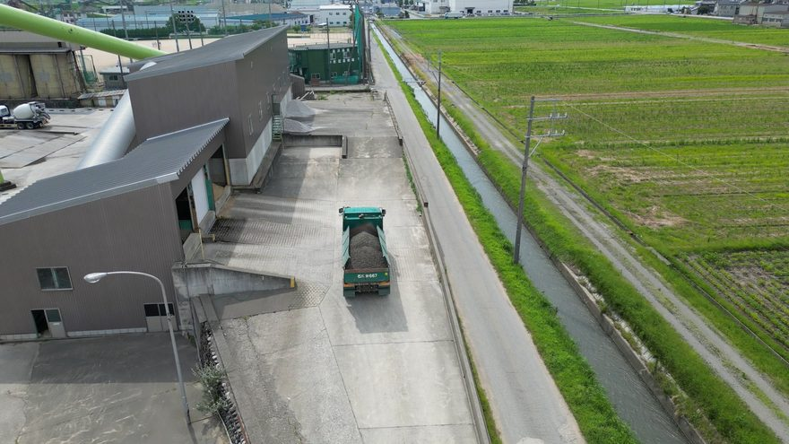
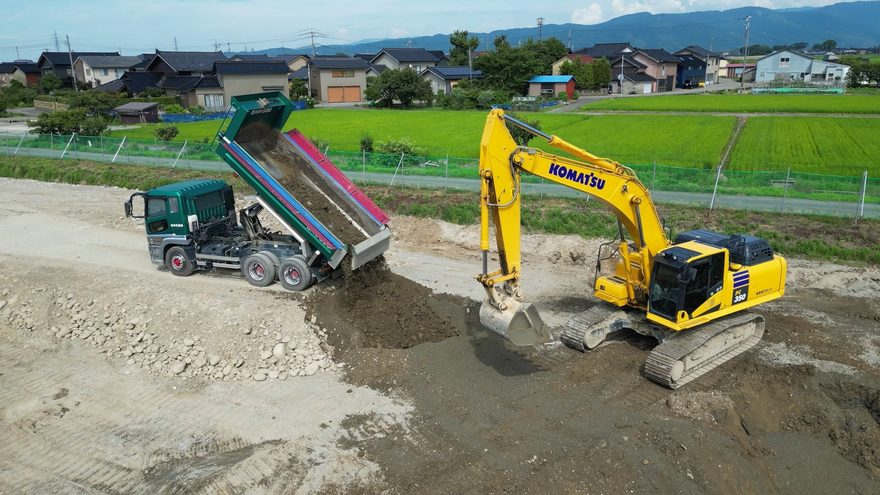
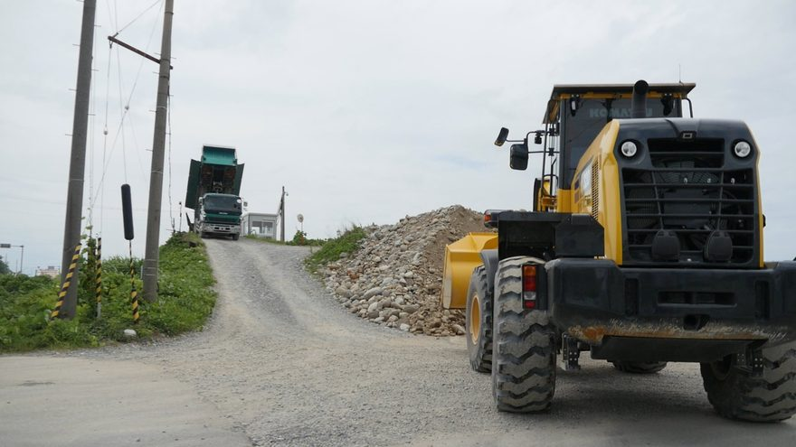
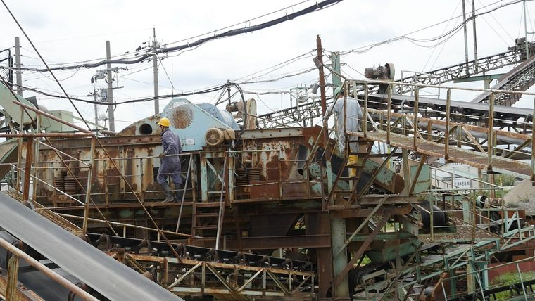
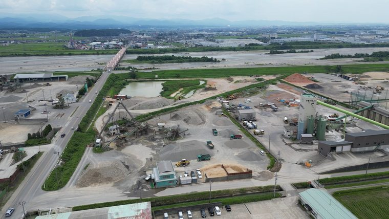
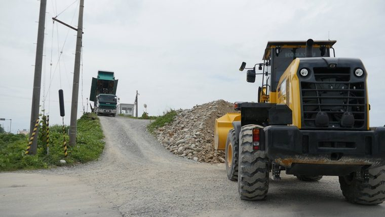
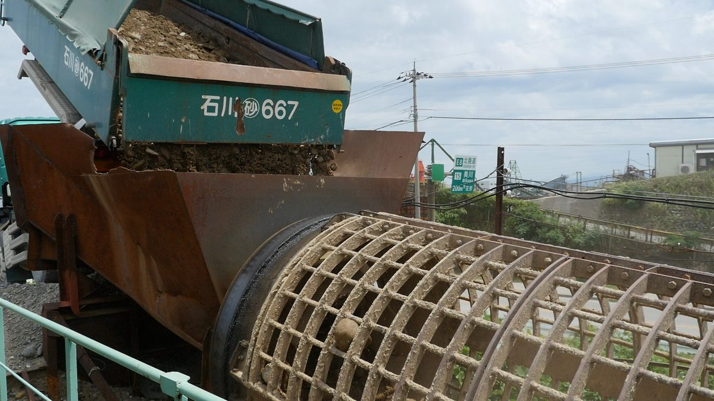
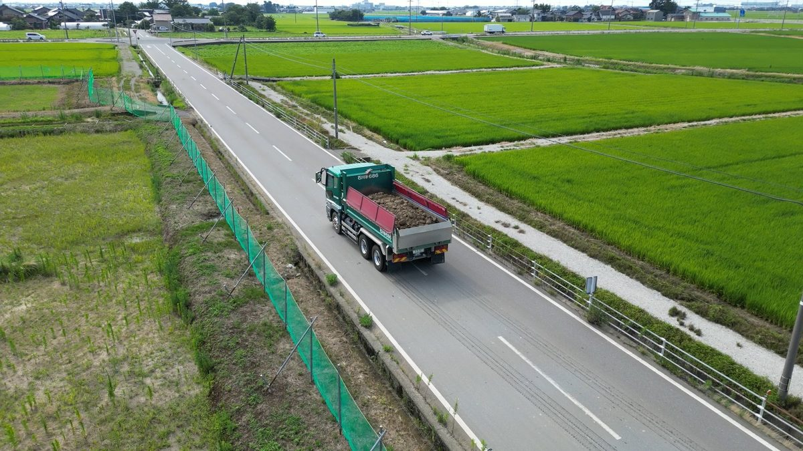
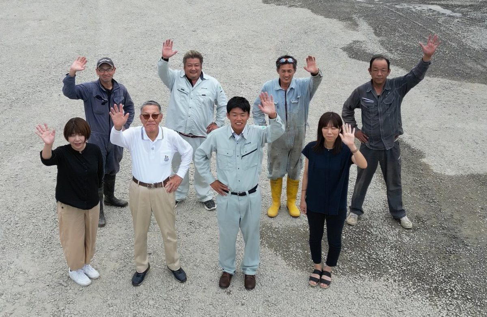

トン単価の従量課金で費用がかさみ、現場の利益を圧迫している。
工期変更で「明日すぐ残土を持っていきたい」のに、対応してくれる先がない。
雨天・泥濘を理由に、いつもの処分場に受け入れを断られてしまった。
残土処分、埋め戻し用資材、ダンプの手配を、それぞれ別々の業者に頼むのが手間。
加州石産は、これらすべてのお悩みに対応しています。

他社が重さ（トン単位）で課金するのに対し、当社は1台ごとの固定料金制。1台いくらが事前に確定するため、現場ごとの処分コストを正確に把握でき、利益管理がしやすくなります。

雨天・泥濘状態など、他社が断りがちな土でもなるべく受け入れます。地面が凍る冬季も、設備を整えているため通常どおり受入可能。朝7時から営業しているので、「今日これから」「明日朝イチ」の緊急搬入にも極力対応します。

残土処分の帰りに砂利・砂・砕石を積み込む、ダンプを時間単位で手配する。複数業者に分散していた窓口を一本化し、現場の段取りをシンプルにします。
| 一般的な処分業者 | 加州石産株式会社 | |
|---|---|---|
| 料金体系 | トン単価による従量課金制（費用が読みにくい） | 1台ごとの固定料金制で、費用感を把握しやすい |
| 急な依頼・悪天候 | 断られることが多い | 可能な限り柔軟に受け入れ（早朝・遅い時間帯もご相談可） |
| 冬季・凍結期 | 地面の凍結を理由に、受入を停止・制限されることがある | 設備を整えているため、冬場も通常どおり受け入れ可能 |
| 受付時間 | 日中のみの対応が中心 | 朝7:00〜17:00（日曜・祝日定休）。早朝の搬入にも対応しやすい |
| 資材調達の相談 | 不可（処分のみ対応） | 砂利・砂・砕石の製造販売を行っており、処分と調達を一括相談可能 |
| ダンプ貸切・手配 | 対応なし（別途手配が必要） | 時間・半日単位で貸切・手配に対応 |
当社の安さには、明確な理由があります。本業である骨材の自社採掘・製造と、残土を自社で活かす循環型の仕組みが、他社にはない固定料金を支えています。

石川県内の山を自社で採掘し、生コン・アスファルト工場向けに砂利・砂・砕石を製造・販売しています。これが加州石産の本業です。

残土を中間処理業者に委託せず、自社管理地へ直接受け入れることでコストを削減。地域の建設残土を土地の適正管理に活かす循環型の仕組みです。

自社の採掘跡地の埋め戻しに使う残土として受け入れるため、処理コストが低く、重さに関わらず1台いくらの固定料金が成立します。
採掘 → 販売 → 残土受入 → 跡地の埋め戻し。この循環が、地域の残土を有効活用しながら、読みやすい固定料金を成り立たせています。

狭い路地や小さなお庭には小型ダンプで、大量のご注文には大型ダンプで。複数台を自社保有しているため、量にあわせて柔軟に手配できます。
価格については、受け入れ可否・車種・搬入予定日とあわせて、お気軽にお問い合わせください。掲載以外の規格・数量のご相談も承ります。
受け入れた残土は、許可を受けた自社管理地へ運搬し、適切に処分いたします。
個人のお客様も歓迎です。お庭の敷砂利、家庭菜園・畑の砂、芝生の目土、砂場用の砂、DIYで出た不要な残土などもご相談ください。
雨天が続き、複数の処分場に断られ続けた。現場の工程が止まりそうで、このままでは工期に響くと焦っていた。
当日の緊急連絡にも対応。雨天・泥濘状態の土でも受け入れてもらい、現場を止めずに済んだ。
それ以来、継続してご依頼いただいています。急な変化でも現場を止めない安心感が評価されています。
採掘やダンプの作業風景、そして一緒に働く仲間の雰囲気まで。加州石産の「動く現場」をYouTubeで公開しています。文字や写真では伝わりにくい、現場のスケールと空気感をぜひご覧ください。


| 会社名 | 加州石産株式会社 （株式会社砂利プラント） |
|---|---|
| 所在地 | 〒923-1276 石川県能美郡川北町橘字コ162 |
| 代表者 | 代表取締役 髙木 雅宣 代表取締役 髙木 太平 |
| 事業内容 | 採石業・砂利採取業 砂利・砂・砕石一式の製造販売 生コン・アスファルト工場への納入 建設発生土・石ガラ・大玉石・コンクリートがらの受入処分 大型＆小型ダンプの貸切・貸出 |
| 営業時間 | 7:00 〜 17:00 定休日：日曜・祝日 |
| 連携先 | 手取川生コン株式会社ほか、20年来のパートナー企業と連携 |
| 電話 / FAX | TEL 076-277-1107 携帯 090-2839-1276 FAX 076-277-1106 |
残土の受け入れ先と、砂利・砂・砕石の調達先をまとめて手配可能です。現場を知り尽くしたスタッフが、地域密着で迅速・実務的に対応いたします。
営業時間 7:00 〜 17:00 ／ 定休日：日曜・祝日
お急ぎの場合はお電話が確実です。早朝の搬入もご相談ください。フォームでのご相談は下記からどうぞ。
下記フォームに、分かる範囲でご記入ください。
担当者より折り返しご連絡いたします（お電話：076-277-1107 ／ 090-2839-1276）。
フォームがうまく送れない場合は、お電話（076-277-1107 ／ 090-2839-1276）でも承ります。